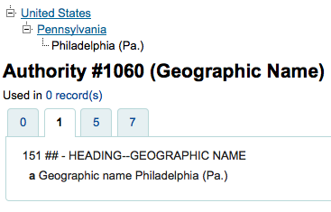

Authorities
Get there: More > Administration > Global System Preferences > Authorities
General
AuthDisplayHierarchy
Default: Don’t display
Asks: ___ broader term/narrower term hierarchies when viewing authorities.
Values:
Display

Don’t display
Description:
If your authority records includes 5xx fields with linked references to broader and/or narrower see also references this preference will turn on a display of those authorities at the top of the record.
AuthorityControlledIndicators
Asks: Use the following text to edit how authority records control indicators of attached biblio fields (and possibly subfield $2). Lines starting with a comment symbol (#) are skipped. Each line should be of the form: (marc21|unimarc), tag, ind1:(auth1|auth2|some_value), ind2:(auth1|auth2|thesaurus|some_value). Here auth1 and auth2 refer to the indicators of the authority record, tag is a biblio field number or an asterisk (*), and some_value is a fixed value (one character). The MARC21 option thesaurus refers to indicators controlled by authority field 008/11 and 040$f.
Description:
Used when merging authorities.
Controls how the indicators of linked authority records affect the corresponding biblio indicators. Currently, the default value is fine-tuned for MARC21 and copies the authority indicators for UNIMARC.
For example, a MARC21 field 100 in a biblio record should pick its first indicator from the linked authority record. The second indicator is not controlled by the authority. This report supports such MARC conventions.
AuthorityMergeLimit
Asks: When modifying an authority record, do not update attached bibliographic records if the number exceeds ___ records. (Above this limit, the merge_authority cron job will update them.)
Default: 50
Description:
This system preference determines the maximum number of bibliographic records that can be updated when an authority record changes.
This helps prevent overusing resources if an authority record is linked to many bibliographic records.
Make sure to enable the merge_authority cron job to catch the updates that wouldn’t otherwise be transferred to bibliographic records.
AuthorityMergeMode
Default: loose
Asks: When updating biblio records from an attached authority record (“merging”), handle subfields of relevant biblio record fields in ___ mode. In strict mode subfields that are not found in the authority record, are deleted. Loose mode will keep them. Loose mode is the historical behavior and still the default.
Values:
loose
strict
AutoCreateAuthorities
Default: do not generate
Asks: When editing records, ___ authority records that are missing.
Values:
do not generate
generate
Important
BiblioAddsAuthorities must be set to “allow” for this to have any effect
Description:
When this and BiblioAddsAuthorities are both turned on, automatically create authority records for headings that don’t have any authority link when cataloging. When BiblioAddsAuthorities is on and AutoCreateAuthorities is turned off, do not automatically generate authority records, but allow the user to enter headings that don’t match an existing authority. When BiblioAddsAuthorities is off, this has no effect.
BiblioAddsAuthorities
Default: allow
Asks: When editing records, ___ them to automatically create new authority records if needed, rather than having to reference existing authorities.
Values:
allow
This setting allows you to type values in the fields controlled by authorities and then adds a new authority if one does not exist
don’t allow
This setting will lock the authority controlled fields, forcing you to search for an authority versus allowing you to type the information in yourself.
MARCAuthorityControlField008
Default: || aca||aabn | a|a d
Asks: Use the following text for the contents of MARC21 authority control field 008 position 06-39 (fixed length data elements).
Important
Do not include the date (position 00-05) in this preference, Koha will calculate automatically and put that in before the values in this preference.
Description:
This preference controls the default value in the 008 field on Authority records. It does not effect bibliographic records.
UNIMARCAuthorityField100
Default: afrey50 ba0
Asks: Use the following text for the contents of UNIMARC authority field 100 position (fixed length data elements).
Important
Do not include the date (position 00-07) in this preference, Koha will calculate automatically and put that in before the values in this preference.
Description:
This preference controls the default value in the 100 field on Authority records cataloged in UNIMARC. It does not effect bibliographic records.
UseAuthoritiesForTracings
Default: Don’t use
Asks: ___ authority record numbers instead of text strings for searches from subject tracings.
Values:
Don’t use
Search links look for subject/author keywords (example: opac-search.pl?q=su:Business%20networks)
Use
Search links look for an authority record (example: opac-search.pl?q=an:354)
Description:
For libraries that have authority files, they may want to make it so that when a link to an authorized subject or author is clicked on the OPAC or staff client it takes the searcher only to a list of results with that authority record. Most libraries do not have complete authority files and so setting this preference to ‘Don’t use’ will allow searchers to click on links to authors and subject headings and perform a keyword search against those fields, finding all possible relevant results instead.
Linker
These preferences will control how Koha links bibliographic records to authority records. All bibliographic records added to Koha after these preferences are set will link automatically to authority records, for records added before these preferences are set there is a script (misc/link_bibs_to_authorities.pl) that your system administrator can run to link records together.
CatalogModuleRelink
Default: Do not
Asks: ___ automatically relink headings that have previously been linked when saving records in the cataloging module.
Values:
Do
Do not
Description:
Longtime users of Koha don’t expect the authority and bib records to link consistently. This preference makes it possible to disable authority relinking in the cataloging module only (i.e. relinking is still possible if link_bibs_to_authorities.pl is run). Note that though the default behavior matches the previous behavior of Koha (retaining links to outdated authority records), it does not match the intended behavior (updating biblio/authority link after bibliographic record is edited). Libraries that want the intended behavior of authority control rather than the way Koha used to handle linking should set CatalogModuleRelink to ‘Do’. Once setting this to ‘Do’ the following preferences can also be set.
LinkerKeepStale
Default: Do not
Asks: ___ keep existing links to authority records for headings where the linker is unable to find a match.
Values:
Do
Do not
Description:
When set to ‘Do’, the linker will never remove a link to an authority record, though, depending on the value of LinkerRelink, it may change the link.
LinkerModule
Default: Default
Asks: Use the ___ linker module for matching headings to authority records.
Values:
Default
Retains Koha’s previous behavior of only creating links when there is an exact match to one and only one authority record; if the LinkerOptions preference is set to ‘broader_headings’, it will try to link headings to authority records for broader headings by removing subfields from the end of the heading
First match
Creates a link to the first authority record that matches a given heading, even if there is more than one authority record that matches
Last match
Creates a link to the last authority record that matches a given heading, even if there is more than one record that matches
Description:
This preference tells Koha which match to use when searching for authority matches when saving a record.
LinkerOptions
Asks: Set the following options for the authority linker ___
Important
This feature is experimental and shouldn’t be used in a production environment until further expanded upon.
Description:
This is a pipe separated (|) list of options. At the moment, the only option available is “broader_headings.” With this option set to “broader_headings”, the linker will try to match the following heading as follows:
=600 10$aCamins-Esakov, Jared$xCoin collections$vCatalogs$vEarly works to 1800.
First: Camins-Esakov, Jared–Coin collections–Catalogs–Early works to 1800
Next: Camins-Esakov, Jared–Coin collections–Catalogs
Next: Camins-Esakov, Jared–Coin collections
Next: Camins-Esakov, Jared (matches! if a previous attempt had matched, it would not have tried this)
LinkerRelink
Default: Do
Asks: ___ relink headings that have previously been linked to authority records.
Values:
Do
Do not
Description:
When set to ‘Do’, the linker will confirm the links for headings that have previously been linked to an authority record when it runs, correcting any incorrect links it may find. When set to ‘Do not’, any heading with an existing link will be ignored, even if the existing link is invalid or incorrect.